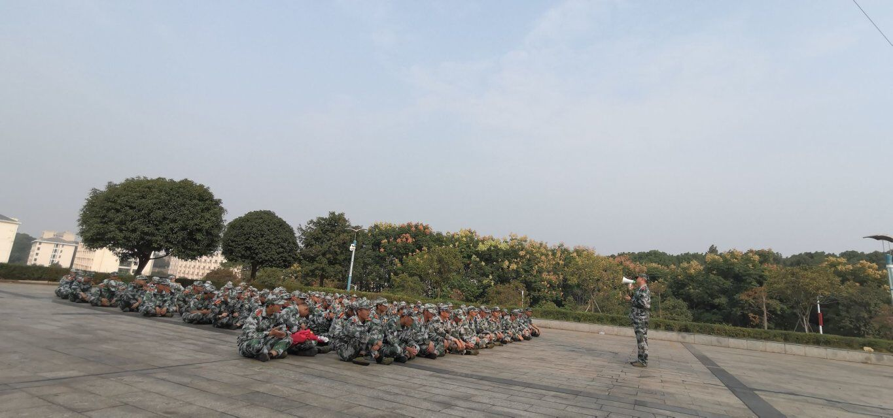
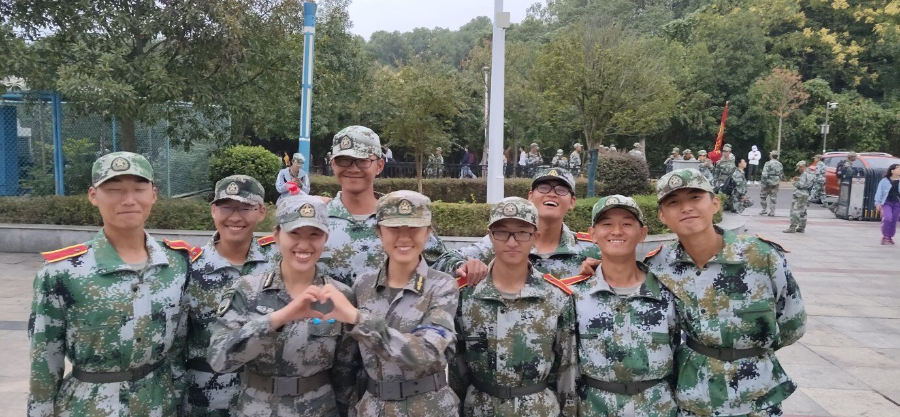

身着橄榄绿的军装，红褐色的皮带扎在腰间，配上解放鞋和迷彩帽，穿着这一身威风的军装，我们的军训生活拉开了帷幕。
我们学校作为一所少年军校，是百色起义红色教育的主要阵地，每年的这个时候，就是少年军校的开班时间。今年，作为五年级的学生，我们有幸参加了此次为期一周的军训。军训的第一天，大家都精神抖擞，同学们俨然一个个小军人。教官是一位阳光帅气的武警战士，他训练我们立正、稍息、向左转、向右转。同学们都认真地执行，生怕自己做错动作，学校上空飘荡着我们整齐响亮的口号声。一天的训练结束，大家都满身大汗，疲惫不堪了，但是并没有抱怨太多。因为累并快乐着。
今天是军训的第二天，不知怎的，同学们都无精打采的，好似一只只被霜打过的茄子——蔫了，口号也喊得有气无力。我也昏昏欲睡，心不在焉。训练时，队伍中总是有“嗡嗡”的讲话声，教官忍无可忍，教训了我们好几遍，却仍无济于作文事。毒辣的阳光炙烤着大地，酷热难耐，我们在阳光下挥汗如雨。军训结束后，我们都叫苦连天，哭爹喊娘。在一旁观看的黄老师对我们的表现也极其不满，回到教室后，语重心长地跟我们说了军训的意义。
听了黄老师的话，我感悟颇深：是啊，今天我们军训时的表现，实在对不起我们身上穿的军装，对不起为我们辛勤付出的老师，对不起和我们一同在烈日下挥汗如雨的教官！我们在家里是衣来伸手，饭来张口的“小公主”“小皇帝”，可一旦在外面吃了一点儿苦头，就喊天喊地，这怎么能行呢？军训又苦又累，可是，为什么学校要开展军训呢？那是为了锻炼我们的毅力，增强我们的体质，磨炼我们的意志，将我们培养成全面发展、能吃苦耐劳的人才啊！
这两天的军训，给我留下了深刻的印象。在接下来的军训中，我坚决做到服从教官命令、不偷懒、在训练时不喊苦和累，认真做好每一次训练，为将来成为社会有用之才奠定良好的基础。